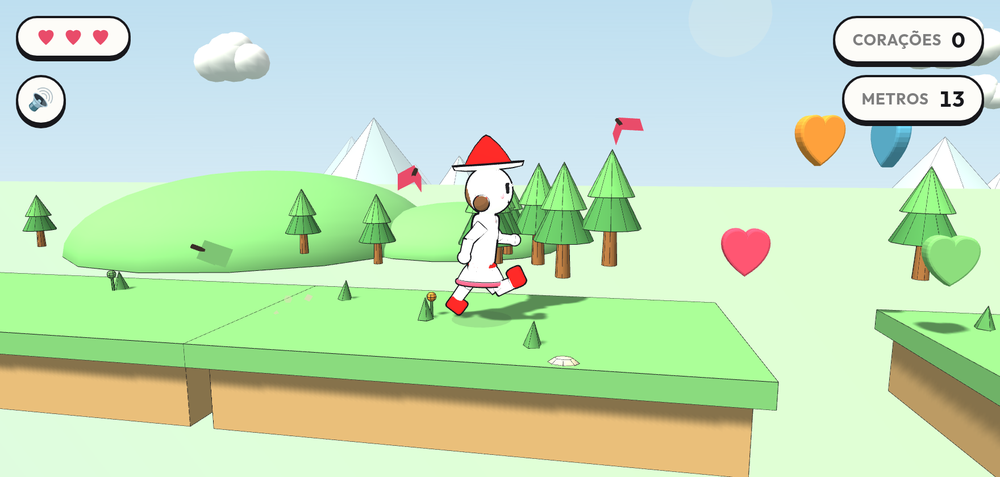

Os jogos que a gente fez em casa. Feitos à mão, um arquivo só, rodando direto no navegador do celular ou do computador.

O desenho da Vitória saiu do papel e foi correr. Quatro fases, bichinhos, estrelas e corações — controlado pela inclinação do celular.